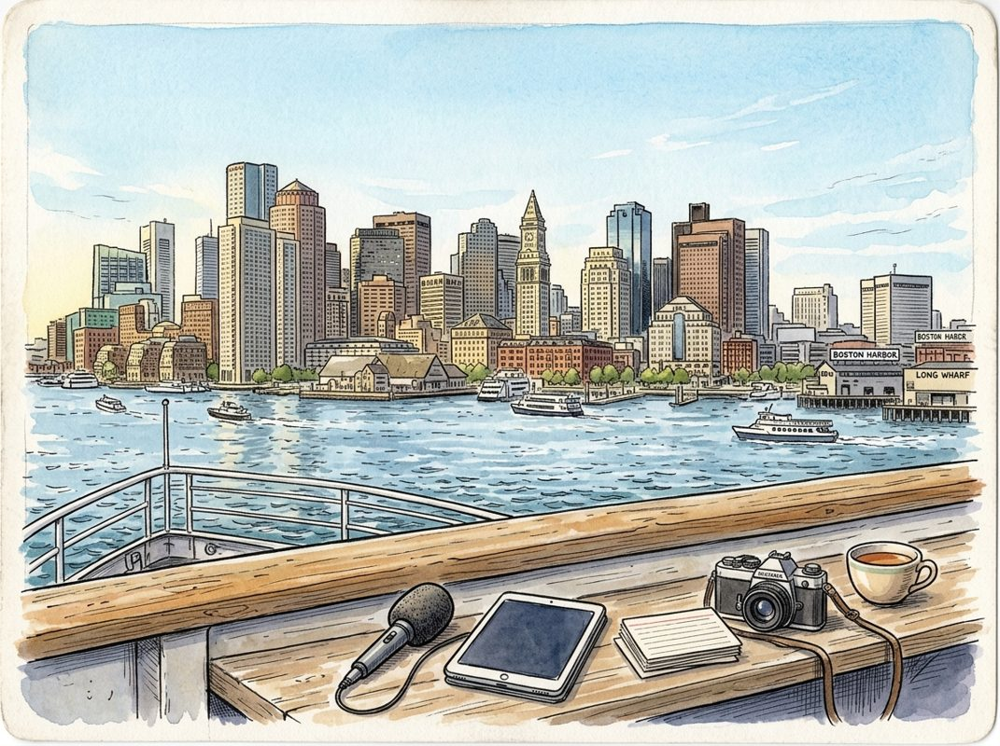

10/16

播客简报 2026-10-16
今日更新
Jensen Huang | Does AI Revenue Justify Capex, '27 AI Bottlenecks, Singularity, Open vs Closed & more
来源：BG2Pod
状态：已读完整音频 transcript
本期播客深入探讨了英伟达CEO黄仁勋对AI未来、算力需求、技术瓶颈、奇点理论以及开放与封闭生态系统等核心议题的独到见解。对于关注AI产业发展趋势、技术演进路径以及英伟达在其中扮演角色的中文读者，本期内容提供了极具启发性的深度思考。
- 从个人荣誉到美国精神：黄仁勋的视角：播客开篇，黄仁勋分享了近期获得美国国家科学奖章的感受，这不仅是对英伟达公司贡献的认可，更是对他个人及家庭“美国梦”的实现。他回忆起父亲当年从台湾赴美出差，被纽约的未来图景震撼，从而萌生了移民美国的梦想。黄仁勋强调，美国吸引全球顶尖人才的能力是其核心竞争力，这种“一切皆有可能”的创新和创业精神，以及由此带来的知识产权流入，是美国科技繁荣的基石。他认为，尽管移民政策需要审慎平衡，但保持这种人才吸引力对美国至关重要。这一开场不仅展现了黄仁勋的个人情怀，也为后续关于科技创新和全球竞争的讨论奠定了人文基调。
- AI算力需求的指数级增长：推理与思考的复杂性：黄仁勋再次强调了他对未来算力需求的判断，认为市场仍严重低估了其增长潜力。他指出，AI算力需求将比去年增长数十亿倍，这并非夸大其词。原因在于，当前AI模型正从简单的“记忆和重复”向更复杂的“推理、规划和问题解决”演进。例如，AI现在需要像人类一样，通过多步骤推理、探索多种可能性、进行战略选择、不断反思和优化资源来解决问题。这种“思考”过程远比单纯的知识检索需要更多的计算资源。此外，随着AI能力提升，其应用场景将指数级扩展，形成“AI越好用，就越被广泛使用，从而需要更多算力”的正向循环，进一步推动算力需求的复合增长。
- AI的“身体”与“大脑”：记忆管理与工具使用：黄仁勋指出，除了模型本身的规模扩展（即“大脑”的进化），AI的另一个重要发展方向是其“身体”——即围绕大型语言模型的“外骨骼”或“线束”的构建。这包括了AI的记忆管理能力，如如何处理工作记忆、短期记忆和长期记忆，以及如何构建和更新知识图谱。他将此比喻为人类在睡眠中进行知识的整理和压缩。另一个关键进展是AI的工具使用能力。AI不再需要从零开始构建所有功能，而是学会了如何利用人类已经创造的各种工具，例如Photoshop、AutoCAD、Verilog等。这使得AI能够更高效地完成复杂任务，极大地扩展了其应用范围和生产力，如同机器人进入人类家庭后，会直接使用现有的工具而非重新发明。
- 2027年的AI瓶颈：电力与基础设施的挑战：黄仁勋预测，到2027年左右，AI发展将面临新的瓶颈，但这次并非芯片算力本身，而是电力和数据中心基础设施。他指出，AI的算力需求增长速度远超传统摩尔定律，导致对电力消耗和数据中心建设的需求激增。目前，全球电力基础设施的增长速度不足以支撑AI的爆发式发展。他强调，未来需要建设更多发电厂，并优化能源效率，以满足AI对能源的巨大胃口。此外，数据中心的物理空间、冷却系统、网络带宽等也将成为制约因素。这一预测提醒我们，AI的未来发展不仅是技术创新问题，更是一个涉及能源、基建和可持续发展的系统性挑战。
- 奇点临近？黄仁勋的谨慎乐观：关于“奇点”——即人工智能超越人类智能的时刻，黄仁勋展现了谨慎的乐观态度。他指出，当前AI在解决复杂问题、进行多步骤推理方面的能力已显著提升，例如模型能够解决纳维-斯托克斯方程。他认为，AI正处于一个加速发展的阶段，但奇点的到来并非一蹴而就，而是一个渐进的过程。他强调，AI的进步是逻辑性的，源于其处理信息和进行推理的效率提升。虽然他没有明确给出奇点到来的时间表，但其言论暗示我们正处于通往更高智能阶段的“山麓”。他认为，这种加速发展将带来前所未有的生产力提升和新的应用场景。
The Changing Physics of Cybersecurity and Drug Development with OpenAI President Greg Brockman
来源：No Priors
原链接：
状态：已读完整音频 transcript
OpenAI总裁Greg Brockman深入探讨了AI如何从根本上重塑科学发现、网络安全和人机交互的未来，揭示了AI生成新知识的潜力、应对安全挑战的紧迫性以及其以人为本的核心理念，适合所有关注AI前沿进展及其深远社会影响的读者。
- AI加速科学发现：从数学到新知识的生成：Greg Brockman强调，AI已跨越能否产生新知识的门槛，尤其在数学领域取得了里程碑式进展。OpenAI的模型已解决近400个百年数学难题，这不仅是机器给出答案，更是通过提供深刻洞察，极大地提升了人类解决复杂问题的能力。他认为，AI能够大规模加速科学发现，将人类的能动性提升到前所未有的高度。这种能力将从数学拓展到生物学、物理学和材料科学等领域，预示着一个由AI驱动的科学突破新时代。AI的进步也体现在其沟通能力上，未来模型将能更好地理解人类认知，以更易懂的方式传达复杂概念，甚至通过“辩论”等技术确保AI输出的可理解性和可控性，从而实现人类对AI的有效监督。
- AI赋能药物研发：数据、瓶颈与监管挑战：药物发现被Greg视为AI最具革命性潜力的应用之一，有望从根本上改善人类生活质量。尽管早期AI研究如AlphaFold专注于分子设计，但整个药物研发周期漫长且成本高昂（15年，15亿美元），其中大部分开销在临床试验。AI在生物学领域的突破依赖于数据，虽然生物数据获取困难，但AI处理少量数据的能力正在提升。AI不仅能加速药物设计，还能优化监管文件撰写等流程，缓解非核心科学瓶颈。Greg指出，人类在生物学方面表现不佳，而神经网络在处理“生物语言”上具有与处理自然语言相似的潜力。未来，AI有望实现“一人一药”的个性化治疗，并大幅缩短研发周期。然而，监管机构对AI驱动的药物审批模式的接受度将是关键挑战，需要AI证明其在预测疗效和毒性方面的卓越能力。
- 网络安全物理学巨变：防御者之窗与巨额投入：Greg Brockman提出，网络安全的“物理学”正在发生根本性变化，我们正处于一个“防御者之窗”期。当前前沿AI能力能帮助防御者强化安全，但这些能力尚未广泛普及，而攻击者可用的AI能力正在迅速提升。他强调，互联网最初为弹性而非安全设计，导致大量技术债务。AI提供了一个前所未有的机会来偿还这些债务，例如通过形式化验证软件安全属性，这在过去因工作量巨大而难以实现。OpenAI已投入10亿美元帮助一线防御者利用其模型发现并修复系统漏洞，甚至暂停25%的生产工程师工作以专注于内部安全强化。Greg大胆预测，未来网络安全支出应“远远超过”软件支出，因为软件的可靠性和安全性将成为其核心价值。
- AI代理“Dots”：工作模式的革新与人机交互的未来：OpenAI的“Dots”代理代表了AI在工作场景中的革新。Greg描述他的“Dots”是一个主动、持续运行的智能助手，能主动提醒待办事项、发现日程冲突，并整合邮件、Slack等信息，理解用户的工作重点。他认为，“Dots”的变革在于其“形态因素”而非底层能力，它将AI智能以一种无缝、上下文感知的方式融入日常工作流。Greg还展望了“无UI即最佳UI”的未来，AI将通过语音、消息等方式与用户交互，并能根据需求动态生成定制化UI，例如为航班预订或自行车组装提供即时、专属的应用程序界面。这种“智能UI”将使AI能够根据用户的即时需求，塑造自身以提供最直观、最有效的交互体验。
- 消费级与企业级AI的融合：成本、功能与市场策略：Greg认为，消费级和企业级AI产品最终将趋于融合，尽管目前存在差异。主要区别在于成本：消费级产品需要大规模、低成本甚至免费提供，而企业级用户愿意为更高的智能和生产力支付更多计算资源。OpenAI拥有ChatGPT的12亿消费者用户和领先的企业及开发者业务，其策略是统一这些战线，而非内部竞争。这种融合将催生新一波创业浪潮，因为AI降低了创业门槛。UI方面，虽然企业级产品需要考虑管理员控制和安全团队等更多利益相关者，导致功能可能受限，但AI的终极目标是实现“无UI”交互。AI将根据用户场景和需求，动态生成或调整界面，甚至在后台默默工作，模糊了传统消费和企业产品的界限。
Friday Wrap-Up: Online Dating and the Portfolio Manager Debrief
来源：In Good Company with Nicolai Tangen
状态：已读完整音频 transcript
这期播客深入探讨了现代在线约会产业的运作机制、用户行为演变及背后的商业逻辑，并穿插了企业领导力与数据洞察的讨论。它适合对数字时代人际关系、科技如何塑造社会行为以及企业如何适应市场变化感兴趣的听众。
- 现代约会：从17世纪广告到数字时代的主流：播客由Marten Skog和Nicolai Tangen主持，本期嘉宾是Match Group（Tinder和Hinge母公司）的CEO Spencer Rascoff，他也是Zillow的创始人。节目开篇追溯了约会广告的历史，指出1695年伦敦报纸上的一则征婚启事可能是最早的个人广告。时至今日，在线约会已成为主流，超过一半的人口使用约会应用。数据显示，45%的18-25岁年轻男性从未在现实生活中主动搭讪女性，这凸显了线上平台的重要性。更令人惊讶的是，通过在线约会开始的婚姻，其离婚率反而更低，这表明约会算法在匹配伴侣方面确实具有其独特价值。
- 匹配算法的秘密与商业逻辑：Rascoff将Match Group的匹配算法形象地比喻为“一副扑克牌”，强调用户提供丰富背景信息的重要性。他建议用户上传多张不同场景的照片，避免穿着相同的衣服；照片中最好有朋友环绕，以展现积极的社交生活；此外，照片中出现宠物狗也是一个加分项。关于Tinder的商业模式，Rascoff指出，尽管让用户长期订阅似乎能带来更多收入，但实际上，平台更倾向于快速促成匹配。因为成功的匹配能迅速建立起应用的良好口碑，这种口碑效应带来的新用户增长，远比延长单个用户订阅周期更有价值。主持人也猜测，约会应用上的女性用户比例可能低于许多人的想象。
- 洞察用户行为：Z世代与社交新趋势：Match Group高度重视对用户行为的深入研究，甚至聘请社会科学家来分析趋势。Rascoff提到，Z世代的年轻人对“约会”（date）一词感到不适，他们认为这更像是一场“工作面试”。因此，约会平台需要调整策略以适应这种心态。一个显著的趋势是“双人约会”（double dates）的兴起，即两对情侣或朋友共同外出社交，这种模式在挪威尤其流行。这表明，现代年轻人更倾向于在轻松、低压力的社交环境中建立联系，而非传统的、一对一的正式约会，约会应用必须不断创新以满足这些不断变化的社交需求。
- 领导力与企业转型：以人为本，产品为先：Rascoff分享了他于2025年接管Match Group时的经验，当时公司存在短期主义倾向。他将重心重新调整为“人、产品、利润”的优先顺序，强调首先关注员工和产品，利润自然随之而来。Nicolai Tangen对此深有共鸣，并分享了他在挪威主权财富基金（Oil Fund）的领导经验。他指出，成功的企业转型需要从文化建设、激发员工动力入手，设定清晰但不宜过多的优先级，并稳步推进，同时高度重视技术投入。这与Rascoff的理念不谋而合，都强调了长期主义和以人为本的重要性。
- 深度访谈的艺术与数据挖掘的潜力：Nicolai Tangen在访谈中展现了其独特的提问技巧，他倾向于提出嘉宾意想不到的问题，以获取更真实、未经排练的回答。他指出，这种方式能促使嘉宾深入思考，从而给出更具洞察力的回应。在讨论数据时，Nicolai认为尽管在线约会平台拥有海量用户数据，但在数据挖掘方面仍有巨大潜力。他以在线零售商Zalando为例，该公司能精确分析欧洲各城市流行色彩的实时趋势。Nicolai好奇地询问Rascoff关于男性面部毛发（如胡须）的流行趋势，这暗示了约会平台通过数据分析，可以为用户提供更个性化的建议，甚至预测时尚潮流。
The company building underwater drones for $50,000
来源：Cheeky Pint
原链接：https://share.transistor.fm/s/92078ce3
状态：已读网页 transcript
这期播客深入探讨了Ulysses公司如何通过建造价格仅为传统水下机器人百分之一的自主水下无人机，来彻底改变海洋作业的成本结构，从而解锁从海洋生态修复到国防安全和能源基础设施维护等一系列新产业。它适合所有对硬科技创新、海洋经济、以及创业公司如何应对复杂市场挑战感兴趣的中文读者。
- 吉尼斯啤酒：被忽视的创新典范：播客开篇以吉尼斯啤酒公司为例，展示了企业如何通过持续的技术创新实现增长。早在19世纪90年代，吉尼斯就设立了内部研发团队，鼓励无方向性研究。其中最著名的成果是“学生t检验”，由威廉·西利·戈塞特为解决啤酒质量控制中的小样本统计问题而发明，因公司保密要求以笔名发表。此外，吉尼斯还开发了罐装啤酒中的“小部件”（widget），并在营销上屡获殊荣。这段引子强调了深层研发、解决实际问题以及垂直整合对企业成功的关键作用，为后续Ulysses的讨论奠定基调。
- Ulysses的诞生：从海草修复到通用机器人平台：Ulysses公司由Will O'Brien及其联合创始人创立，旨在利用机器人解决海洋中的关键任务。最初的灵感来源于一位海洋生物学家对水下手动任务的描述，以及对海草生态系统修复的关注。海草虽覆盖海底面积仅2%，却储存了海洋20%的碳，并支撑着大量商业鱼类种群，但其流失速度远超修复速度。Ulysses意识到，要规模化解决海草修复乃至更广泛的海洋问题，需要一个通用、模块化的水下机器人平台，而非针对单一任务的定制设备。这促使他们开发了名为Mako的水下无人机和Leviathan自主水面载具，后者负责运输、充电和通信。
- “海洋版SpaceX”：降低成本，解锁新前沿：Will O'Brien提出，Ulysses的愿景是成为“海洋领域的SpaceX”，通过大幅降低海洋作业成本来解锁全新的海洋经济。传统海洋作业依赖昂贵的大型船只和大量船员，每天成本高达数十万美元。Ulysses的目标是将水下无人机的成本从500万美元降至5万美元（基础版），实现两个数量级的成本优化。这种成本的降低，如同SpaceX的火箭回收技术，将使过去因成本过高而无法开展的海洋探索、监测和干预任务变得可行，从而将3万亿美元的海洋经济扩展到10万亿美元以上，推动海洋成为新的商业前沿。
- 硬核技术挑战与垂直整合策略：海洋是一个极端恶劣的环境，对水下机器人构成巨大挑战。腐蚀和压力是两大外部因素，Ulysses通过表面涂层和耐压设计应对。然而，最大的技术难题是水下通信，带宽极低（10KB/秒），且距离有限。Ulysses的解决方案是高度自主化，Mako机器人搭载了远超同类产品的计算能力（NVIDIA 5090 GPU），使其能本地进行感知和决策。为实现大规模生产和控制供应链，Ulysses采取了高度垂直整合的策略，从软件到声纳系统、惯性导航系统（INS）等核心硬件，都计划或已开始自主研发和生产，以摆脱传统海事供应链的限制，满足未来百万级无人机的生产需求。
- 多元应用场景：从国防到能源：Ulysses的通用平台使其能够服务于多个高价值领域。目前，公司已成功与美国海军签订合同，执行水雷反制任务，在霍尔木兹海峡紧张局势前就已涉足此领域。同时，他们也与海上风电开发商合作，解决加州浮动式海上风电项目中的电缆缠绕废弃渔线问题。Ulysses的机器人能够日常监测电缆结构完整性，并在发现缠绕物时进行切割。这些应用展示了其技术在军事安全、清洁能源基础设施维护等关键领域的巨大潜力，远超最初的海草修复任务。
Essentials: Neuralink & Technologies to Enhance Human Brains | Dr. Matt MacDougall
来源：Huberman Lab
状态：已读音频详细听记
这期播客通过神经外科医生马特·麦克杜格尔博士的视角，深入探讨了大脑的运作机制、神经外科的突破，以及Neuralink脑机接口技术的当前进展与未来愿景，对于关注神经科学、医疗技术创新及人类增强伦理的听众而言，极具启发性。
- 脑的视角与神经外科的使命：马特·麦克杜格尔博士，一位神经外科医生兼神经科学家，将大脑视为一个由功能模块通过“胶带”连接而成的集合体。他分享了一位年轻患者因车祸导致双侧额叶损伤后，丧失冲动控制能力的悲剧案例，强调了大脑功能失调对个体生活质量的严重影响。神经外科的使命在于修复和改进大脑，甚至添加新结构。尽管神经外科手术风险极高，但有时能创造“拉撒路式的奇迹”。例如，通过2毫米的颅骨钻孔，在MRI引导下插入光纤导管，精确消融脑内肿瘤，使过去无法手术的患者得以康复，且对周围健康组织损伤极小。这展现了神经外科在微创技术上的巨大进步。
- Neuralink的诞生与核心技术：Neuralink被视为承载人类希望与恐惧的“空白画布”，其核心使命是开发脑机接口。公司正致力于研发一种脑植入物，并利用机器人辅助设备精确植入比人类头发还细的微小电极。这些电极被放置在大脑特定区域，旨在读取神经信号。之所以采用机器人进行植入，是因为人脑表面血管密布，且电极极其微小，人类外科医生难以达到所需的精细度和稳定性。机器人能够以极高的精度和速度，将电极植入到大脑皮层需要读取信号的特定区域，确保操作的精准与安全。
- 近期目标：为瘫痪患者带来数字自由：Neuralink的首要目标是帮助患有严重脊髓损伤（如四肢瘫痪）的患者。这些患者的大脑运动皮层功能完好，但信号无法通过受损的脊髓传递到肢体。Neuralink的植入物旨在绕过损伤区域，使患者能够通过意念控制电脑，例如移动鼠标、点击图标、使用屏幕键盘打字，从而恢复他们的数字自由。目前，动物实验已取得显著进展，猴子能够通过意念玩电子游戏并获得奖励，其信息传输速率已达到世界纪录。短期内，患者将能用意念控制电子设备，而长期目标则是将AI作为工具嵌入大脑，并最终重新连接大脑到患者自身的肢体。
- 远期愿景：超越治疗的增强：麦克杜格尔博士对脑机接口的未来充满期待，他表示，一旦设备能够执行比健全人更强的任务（如用意念打字速度超过手打），他本人也愿意接受植入。他设想的未来包括将AI作为工具嵌入大脑，实现意念交流（如“意念短信”），打破传统语言交流的瓶颈，以及认知能力的全面提升，让人类能够无限制地获取信息并进行思考。他还大胆展望了人类与AI的深度融合，甚至形成“多单元”的集体意识。他手背植入的RFID标签，虽功能有限，却是这种人机融合概念的早期实践和验证。
- 安全性、学习能力与伦理考量：麦克杜格尔博士对Neuralink设备的安全性充满信心，认为其安全性远超许多FDA批准的手术标准。脑机接口系统具备双向学习能力：大脑会适应设备，同时设备的软件算法也会根据用户大脑信号的变化模式进行优化，实现人机协同进化。在伦理方面，他强调动物研究在技术成熟和FDA批准前是不可或缺的，主要用于验证设备的生物相容性、安全性和信号读取能力。Neuralink高度重视动物福利，确保动物自愿参与，并提供良好的生活条件，而非强迫或惩罚。
历史精选
The New York Times Company
来源：Acquired
状态：已读部分音频 transcript
《纽约时报》的故事是一部关于媒体行业在剧烈变革中如何通过坚守核心价值、大胆创新商业模式而实现凤凰涅槃的史诗。它不仅适合对媒体、商业史或家族企业传承感兴趣的读者，也为所有面临颠覆性挑战的企业提供了宝贵的启示。
- 报业黄金时代与《纽约时报》的诞生：1851年，美国正经历一场媒体繁荣。人口增长、识字率提高、城市化进程加速，以及即将到来的内战，都催生了对新闻的巨大需求。印刷技术的进步使得报纸生产成本降低，一美分的“廉价报纸”得以普及，触达更广泛的受众。正是在这样的背景下，著名记者兼政治家亨利·贾维斯·雷蒙德（Henry Jarvis Raymond）与银行家乔治·琼斯（George Jones）共同创立了《纽约每日时报》（The New York Daily Times）。雷蒙德不仅是报纸的灵魂人物，更是共和党的五位创始人之一，其政治背景与报纸的早期发展紧密相连。尽管如此，雷蒙德在创刊词中就明确了报纸的独立立场：在公共利益需要时保守，在需要改革时激进，追求真相而非哗众取宠。
- 早期挑战与雷蒙德的坚守：《纽约时报》在创刊后迅速发展，短短几年内发行量从1万份飙升至7.5万份。1857年，报纸更名为《纽约时报》。然而，其发展并非一帆风顺。1863年，美国内战期间，纽约爆发了针对征兵制度的骚乱。作为林肯政府和共和党的喉舌，《纽约时报》总部成为暴徒的目标。雷蒙德展现出惊人的勇气和领导力，他从战争部调来步枪和两挺加特林机枪，亲自带领员工武装守卫报社大楼，成功击退了暴徒，避免了报社被毁的命运。这一事件不仅彰显了雷蒙德的决心，也奠定了《纽约时报》在动荡时期坚守新闻阵地的形象。然而，雷蒙德和琼斯相继去世后，报社因管理不善和1893年的金融危机陷入破产边缘，发行量跌至9000份。
- 阿道夫·奥克斯的“第二次创办”：在《纽约时报》濒临倒闭之际，一位来自田纳西州查塔努加的年轻报人阿道夫·奥克斯（Adolph Ochs）登场，开启了报纸的“第二次创办”。奥克斯出身贫寒，11岁便开始送报，对报业充满热情。他曾以250美元的首付和5500美元的卖方票据成功盘活了《查塔努加时报》。尽管在房地产投资上遭遇挫折，但他坚信自己是“报人”。1896年，奥克斯带着总统格罗弗·克利夫兰的推荐信，以7.5万美元的预付款（大部分是借来的）和60万美元的债务承诺，成功说服债权人，接管了负债累累的《纽约时报》。他几乎没有动用自己的资金，便掌控了美国最负盛名的报纸，这堪称商业史上的一段传奇。
- 奥克斯的复兴策略与“无聊”的成功：奥克斯接手《纽约时报》时，纽约报业正盛行威廉·伦道夫·赫斯特和约瑟夫·普利策等巨头主导的“黄色新闻”，以耸人听闻的报道吸引读者。奥克斯反其道而行之，他提出了一项“无聊”但务实的策略：专注于严肃、客观、高质量的新闻报道，避免煽情和偏见。他将报纸价格降至一美分，使其成为大众负担得起的“廉价报纸”，同时坚持其作为“所有值得印刷的新闻”的记录者的定位。这一策略在当时的市场中独树一帜，吸引了那些寻求可靠信息而非娱乐的读者。通过这种差异化竞争和对新闻专业主义的坚守，奥克斯成功地让《纽约时报》摆脱了破产困境，重塑了其作为美国最权威报纸的地位。
- 家族传承与独特的公司治理：自奥克斯时代以来，《纽约时报》一直由奥克斯-苏兹伯格（Ochs-Sulzberger）家族控制，至今已传承五代。这种长期的家族控制是其独特之处，也塑造了报纸的文化和发展轨迹。为了确保家族对报纸编辑独立性和长期愿景的掌控，即便在1969年上市后，《纽约时报公司》也采用了独特的三级股权结构：普通股股东几乎没有投票权，而家族成员持有的特殊股票拥有绝对控制权。这种治理结构在科技公司中也曾被效仿，旨在保护创始人或家族对企业核心使命的掌控，使其免受短期市场压力的影响，从而能够专注于新闻质量和长期发展。
Boeing (REPLAY): Turbulent Times - [Business Breakdowns]
来源：Business Breakdowns
原链接：https://joincolossus.com/episodes/49528584/ostrower-boeing-faster-better-cheaper)
状态：已读网页 transcript
这期播客深入剖析了航空巨头波音公司从工程卓越走向财务导向的文化变迁，以及由此引发的信任危机和运营困境。它不仅适合关注航空业的投资者和从业者，更对所有对企业文化、战略转型和危机管理感兴趣的商业人士提供了深刻的案例研究。
- 航空业双寡头：波音的百年基石与独特商业模式：波音公司作为一家拥有百年历史的航空航天巨头，与欧洲的空中客车（Airbus）共同构成了全球商业航空制造领域的著名双寡头格局。这种格局的形成，源于航空器研发和制造的极高门槛，包括天文数字般的研发投入、漫长的认证周期、复杂的技术积累以及严格的监管要求。波音的业务主要分为商业飞机、防务和全球服务三大板块，其中商业飞机业务贡献了近40%的营收。其商业模式的特点在于，飞机一旦投入使用，便拥有长达数十年的生命周期，期间需要持续的维护、零部件供应和升级服务，这为公司带来了稳定的服务收入。然而，这种模式也意味着任何新机型的研发都伴随着巨大的风险和不确定性。
- 麦道并购：从工程文化到财务优先的转折：1997年波音与麦克唐纳·道格拉斯（McDonnell Douglas，简称麦道）的合并，被播客嘉宾Jon Ostrower视为波音公司文化和战略的重大转折点。在此之前，波音以其卓越的工程技术和创新能力闻名，工程师在公司内部拥有极高的话语权。然而，麦道公司在被并购前，已更多地转向了财务驱动和成本控制的理念。合并后，麦道的管理层逐渐主导了波音的运营，将“更快、更好、更便宜”（Faster, Better, Cheaper）的口号奉为圭臬，过度强调削减成本和提升股东价值，导致工程文化被边缘化。这一转变，为波音后续一系列问题的爆发埋下了伏笔，使其从一个以产品和技术为核心的企业，逐渐偏离了其赖以生存的根基。
- 737 MAX危机：文化转变的惨痛代价：麦道并购后的文化变迁，最终在737 MAX系列飞机的两次致命空难中以最惨痛的方式暴露出来。2018年和2019年，两架737 MAX飞机在短时间内相继坠毁，共造成346人遇难。调查显示，事故与飞机设计中的机动特性增强系统（MCAS）缺陷以及波音在认证过程中对监管机构的隐瞒有关。这一事件不仅导致737 MAX机型在全球范围内停飞近两年，给波音带来了数百亿美元的经济损失，更严重打击了其百年积累的品牌声誉和公众信任。播客强调，MAX危机并非孤立的技术故障，而是长期以来工程文化被削弱、质量控制被忽视、以及管理层急于求成等深层问题的集中体现，是“更快、更好、更便宜”理念的极端后果。
- 供应链困境与领导层动荡的连锁反应：除了737 MAX危机，波音在过去五年还面临着严峻的供应链挑战和频繁的领导层变动。航空制造是一个极其复杂的全球供应链网络，涉及成千上万的供应商。疫情期间的停工停产、劳动力短缺以及地缘政治紧张，都使得波音的生产计划屡次受挫，交付延期。同时，公司高层在危机期间的频繁更迭，也进一步加剧了内部的不稳定性和战略执行的连续性问题。这种动荡不仅影响了公司的运营效率，也使得波音在与主要竞争对手空中客车的较量中处于劣势，空中客车凭借其A320系列在单通道飞机市场占据了更强的地位，并不断蚕食波音的市场份额。
- 新机型研发的巨大挑战与未来增长点：开发一款全新的商业飞机需要投入高达200亿至300亿美元，且周期漫长，风险巨大。在737 MAX危机之后，波音在推出新机型方面显得尤为谨慎，这使得其在产品线更新上落后于空中客车。尽管如此，全球航空旅行的长期增长趋势依然强劲，尤其是在新兴市场。波音未来的增长点可能包括现有主力机型的改进、防务业务的稳定贡献，以及对eVTOL（电动垂直起降飞行器）等新兴航空技术的探索。然而，这些新方向的成功，都离不开波音能否真正实现文化重塑，重新将工程卓越和质量安全放在首位，并有效解决其内部的运营效率和供应链管理问题。